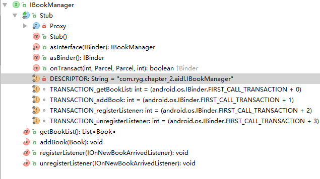

前言 本文是《Android开发艺术探索》中IPC机制的读书笔记。
Android的多进程模式 开启多进程的方式 两种方法启用多进程： 指定android:process的例子 1 2 3 4 5 6 7 8 9 10 11 12 13 14 15 16 <activity android:name=".MainActivity" android:configChanges="orientation|screenSize" android:launchMode="standard" > <intent-filter> <action android:name="android.intent.action.MAIN" /> </intent-filter> </activity> <activity android:name=".SecondActivity" android:configChanges="screenLayout" android:process=":remote" /> <activity android:name=".ThirdActivity" android:configChanges="screenLayout" android:process="com.ryg.chapter_2.remote" />
都运行起来后，可见共有3个进程：说明
Android系统为每个应用分配一个UID，两个应用具有相同的UID
两个应用的签名相同
多进程的运行机制 一个神奇的现象 1 2 3 public class UserManager { public static int sUserId = 1; }
在MainActivity中对静态变量sUserId赋值。1 2 UserManager.sUserId = 2; Log.d(TAG, "UserManage.sUserId=" + UserManager.sUserId);
在3个Activity中都打印出这个值:1 2 3 17:05:40.087 15322-15322/? D/MainActivity: UserManage.sUserId=2 17:05:46.674 15339-15339/com.ryg.chapter_2:remote D/SecondActivity: UserManage.sUserId=1 17:05:47.572 15502-15502/com.ryg.chapter_2.remote D/ThirdActivity: UserManage.sUserId=1
可以看到，静态变量sUserId的值在不同进程中不一样。 现象原因 多进程中的问题
静态变量和单例模式失效
线程同步机制失效
SharedPreferences失效
Application会多次创建1 2 3 4 5 @Override public void onCreate() { super.onCreate(); Log.d(TAG, "application start, thredid :" + Process.myPid()); }
其结果为：
1 2 3 17:17:04.316 25199-25199/com.ryg.chapter_2:remote D/MyApplication: application start, thredid :25199 17:17:16.599 25262-25262/com.ryg.chapter_2.remote D/MyApplication: application start, thredid :25262 17:17:04.269 25182-25182/com.ryg.chapter_2 D/MyApplication: application start, thredid :25182
为解决以上问题，我们需要进程间通信。
IPC基础之Binder 序列化的两种方式：实现Serializable接口和实现Parcelable接口。这里就不详细说明了，相信开发过程中都用到过不少。
Binder是什么 Binder是一个实现了IBinder接口的类。
Binder是进程间通信的一种方式；
在Android Framework中，Binder是ServiceManager连接各种Manager的桥梁(如WindowManager、ActivityManager等)；
在安卓应用层中，Binder是客户端和服务端之间通信的媒介(代理)。它负责帮客户端向服务端请求结果，并把结果返回给客户端。为什么需要Binder 要实现进程间通信，要解决以下问题：
如何知道客户端需要调用哪个进程以及该进程中的函数
客户端如何将函数形参发送给远程进程中的函数，以及如何将远程进程函数计算结果返回客户端
如何去屏蔽底层通信细节，让实现客户端调用远程函数就像调用本地函数一样android.os.IBinder和android.os.Binder 其核心API是1 2 public boolean transact(int code, Parcel data, Parcel reply, int flags) throws RemoteException;
transact方法由客户端执行，其参数的含义：
code：唯一标识，根据它确定要执行的方法。
data：序列化后的请求参数。如果为null，则构造一个空的Parcel。
reply：用于接收执行结果。可能为null。
flags：普通的RPC为0，单向的RPC为1。
它和Binder类中的onTransct匹配1 2 protected boolean onTransact(int code, Parcel data, Parcel reply, int flags) throws RemoteException
onTransact由服务端执行，和客户端调用的transact是匹配。
Binder.transact1 2 3 4 5 6 7 8 9 public final boolean transact(int code, Parcel data, Parcel reply, int flags) throws RemoteException { …… boolean r = onTransact(code, data, reply, flags); if (reply != null) { reply.setDataPosition(0); } return r; }
AIDL 一个例子。 写一个AIDL：1 2 3 4 5 6 7 8 9 10 11 12 13 14 15 16 17 18 19 20 21 22 23 24 25 26 27 28 29 30 31 32 public class Book implements Parcelable { public String bookName; public Book() { } public Book(String bookName) { this.bookName = bookName; } public int describeContents() { return 0; } public void writeToParcel(Parcel out, int flags) { out.writeString(bookName); } public static final Parcelable.Creator<Book> CREATOR = new Parcelable.Creator<Book>() { public Book createFromParcel(Parcel in) { return new Book(in); } public Book[] newArray(int size) { return new Book[size]; } }; private Book(Parcel in) { bookName = in.readString(); } }
Book.aidl
IBookManager.aidl
1 2 3 4 5 6 interface IBookManager { List<Book> getBookList(); void addBook(in Book book); void registerListener(IOnNewBookArrivedListener listener); void unregisterListener(IOnNewBookArrivedListener listener); }
IBookManager.java
1 2 3 4 5 6 7 8 9 10 11 12 13 14 15 16 17 18 19 20 21 22 23 24 25 26 27 28 29 30 31 32 33 34 35 36 37 38 39 40 41 42 43 44 45 46 47 48 49 50 51 52 53 54 55 56 57 58 59 60 61 62 63 64 65 66 67 68 69 70 71 72 73 74 75 76 77 78 79 80 81 82 83 84 85 86 87 88 89 90 91 92 93 94 95 96 97 98 99 100 101 102 103 104 105 106 107 108 109 110 111 112 113 114 115 116 117 118 119 120 121 122 123 124 125 126 127 128 129 130 131 132 133 134 135 136 137 138 139 140 141 142 143 144 145 146 147 148 149 150 151 152 153 154 155 156 157 158 159 160 161 162 163 164 165 166 167 168 public interface IBookManager extends android.os.IInterface { public static abstract class Stub extends android.os.Binder implements com.ryg.chapter_2.aidl.IBookManager { private static final java.lang.String DESCRIPTOR = "com.ryg.chapter_2.aidl.IBookManager"; public Stub() { this.attachInterface(this, DESCRIPTOR); } public static com.ryg.chapter_2.aidl.IBookManager asInterface(android.os.IBinder obj) { if ((obj == null)) { return null; } android.os.IInterface iin = obj.queryLocalInterface(DESCRIPTOR); if (((iin != null) && (iin instanceof com.ryg.chapter_2.aidl.IBookManager))) { return ((com.ryg.chapter_2.aidl.IBookManager) iin); } return new com.ryg.chapter_2.aidl.IBookManager.Stub.Proxy(obj); } @Override public android.os.IBinder asBinder() { return this; } @Override public boolean onTransact(int code, android.os.Parcel data, android.os.Parcel reply, int flags) throws android.os.RemoteException { switch (code) { case INTERFACE_TRANSACTION: { reply.writeString(DESCRIPTOR); return true; } case TRANSACTION_getBookList: { data.enforceInterface(DESCRIPTOR); java.util.List<com.ryg.chapter_2.aidl.Book> _result = this.getBookList(); reply.writeNoException(); reply.writeTypedList(_result); return true; } case TRANSACTION_addBook: { data.enforceInterface(DESCRIPTOR); com.ryg.chapter_2.aidl.Book _arg0; if ((0 != data.readInt())) { _arg0 = com.ryg.chapter_2.aidl.Book.CREATOR.createFromParcel(data); } else { _arg0 = null; } this.addBook(_arg0); reply.writeNoException(); return true; } case TRANSACTION_registerListener: { data.enforceInterface(DESCRIPTOR); com.ryg.chapter_2.aidl.IOnNewBookArrivedListener _arg0; _arg0 = com.ryg.chapter_2.aidl.IOnNewBookArrivedListener.Stub.asInterface(data.readStrongBinder()); this.registerListener(_arg0); reply.writeNoException(); return true; } case TRANSACTION_unregisterListener: { data.enforceInterface(DESCRIPTOR); com.ryg.chapter_2.aidl.IOnNewBookArrivedListener _arg0; _arg0 = com.ryg.chapter_2.aidl.IOnNewBookArrivedListener.Stub.asInterface(data.readStrongBinder()); this.unregisterListener(_arg0); reply.writeNoException(); return true; } } return super.onTransact(code, data, reply, flags); } private static class Proxy implements com.ryg.chapter_2.aidl.IBookManager { private android.os.IBinder mRemote; Proxy(android.os.IBinder remote) { mRemote = remote; } @Override public android.os.IBinder asBinder() { return mRemote; } public java.lang.String getInterfaceDescriptor() { return DESCRIPTOR; } @Override public java.util.List<com.ryg.chapter_2.aidl.Book> getBookList() throws android.os.RemoteException { android.os.Parcel _data = android.os.Parcel.obtain(); android.os.Parcel _reply = android.os.Parcel.obtain(); java.util.List<com.ryg.chapter_2.aidl.Book> _result; try { _data.writeInterfaceToken(DESCRIPTOR); mRemote.transact(Stub.TRANSACTION_getBookList, _data, _reply, 0); _reply.readException(); _result = _reply.createTypedArrayList(com.ryg.chapter_2.aidl.Book.CREATOR); } finally { _reply.recycle(); _data.recycle(); } return _result; } @Override public void addBook(com.ryg.chapter_2.aidl.Book book) throws android.os.RemoteException { android.os.Parcel _data = android.os.Parcel.obtain(); android.os.Parcel _reply = android.os.Parcel.obtain(); try { _data.writeInterfaceToken(DESCRIPTOR); if ((book != null)) { _data.writeInt(1); book.writeToParcel(_data, 0); } else { _data.writeInt(0); } mRemote.transact(Stub.TRANSACTION_addBook, _data, _reply, 0); _reply.readException(); } finally { _reply.recycle(); _data.recycle(); } } @Override public void registerListener(com.ryg.chapter_2.aidl.IOnNewBookArrivedListener listener) throws android.os.RemoteException { android.os.Parcel _data = android.os.Parcel.obtain(); android.os.Parcel _reply = android.os.Parcel.obtain(); try { _data.writeInterfaceToken(DESCRIPTOR); _data.writeStrongBinder((((listener != null)) ? (listener.asBinder()) : (null))); mRemote.transact(Stub.TRANSACTION_registerListener, _data, _reply, 0); _reply.readException(); } finally { _reply.recycle(); _data.recycle(); } } @Override public void unregisterListener(com.ryg.chapter_2.aidl.IOnNewBookArrivedListener listener) throws android.os.RemoteException { android.os.Parcel _data = android.os.Parcel.obtain(); android.os.Parcel _reply = android.os.Parcel.obtain(); try { _data.writeInterfaceToken(DESCRIPTOR); _data.writeStrongBinder((((listener != null)) ? (listener.asBinder()) : (null))); mRemote.transact(Stub.TRANSACTION_unregisterListener, _data, _reply, 0); _reply.readException(); } finally { _reply.recycle(); _data.recycle(); } } } static final int TRANSACTION_getBookList = (android.os.IBinder.FIRST_CALL_TRANSACTION + 0); static final int TRANSACTION_addBook = (android.os.IBinder.FIRST_CALL_TRANSACTION + 1); static final int TRANSACTION_registerListener = (android.os.IBinder.FIRST_CALL_TRANSACTION + 2); static final int TRANSACTION_unregisterListener = (android.os.IBinder.FIRST_CALL_TRANSACTION + 3); } public java.util.List<com.ryg.chapter_2.aidl.Book> getBookList() throws android.os.RemoteException; public void addBook(com.ryg.chapter_2.aidl.Book book) throws android.os.RemoteException; public void registerListener(com.ryg.chapter_2.aidl.IOnNewBookArrivedListener listener) throws android.os.RemoteException; public void unregisterListener(com.ryg.chapter_2.aidl.IOnNewBookArrivedListener listener) throws android.os.RemoteException; }
IBookManager结构分析 
Stub类
IBookManager.aidl中定义的方法
内部类Stub 1 public static abstract class Stub extends android.os.Binder implements com.ryg.chapter_2.aidl.IBookManager
Stub是个Binder类，同时还实现了IBookManager
一个内部类Proxy 1 private static class Proxy implements com.ryg.chapter_2.aidl.IBookManager
Proxy类和Stub实现了相同的接口IBookManager，再加上它的名字，应该也隐约猜到了它是干嘛的。
3个成员方法
asInterface1 2 3 4 5 6 7 8 9 10 public static com.ryg.chapter_2.aidl.IBookManager asInterface(android.os.IBinder obj) { if ((obj == null)) { return null; } android.os.IInterface iin = obj.queryLocalInterface(DESCRIPTOR); if (((iin != null) && (iin instanceof com.ryg.chapter_2.aidl.IBookManager))) { return ((com.ryg.chapter_2.aidl.IBookManager) iin); } return new com.ryg.chapter_2.aidl.IBookManager.Stub.Proxy(obj); }
参数为Binder对象，返回值为Stub.Proxy。如果同进程，返回的是自身。
asBinder1 2 3 public android.os.IBinder asBinder() { return this; }
返回当前的Binder类，即自身。
onTransact1 public boolean onTransact(int code, android.os.Parcel data, android.os.Parcel reply, int flags) throws android.os.RemoteException
运行于服务端的Binder线程中，客户端发起跨进程请求最终会交由它来处理。1 2 3 4 5 6 7 8 9 10 11 12 13 14 15 16 switch (code) { …… //step1，根据code确定具体的方法。 case TRANSACTION_registerListener: { data.enforceInterface(DESCRIPTOR); //step2，从data中读出参数 com.ryg.chapter_2.aidl.IOnNewBookArrivedListener _arg0; _arg0 = com.ryg.chapter_2.aidl.IOnNewBookArrivedListener.Stub.asInterface(data.readStrongBinder()); //step3，调用具体方法 this.registerListener(_arg0); //step4，将结果写入reply reply.writeNoException(); return true; } …… }
1个String常量和4个int常量
String DESCRIPTOR
int TRANSACTION_XXX
使用例子 实现Stub：
1 2 3 4 5 6 7 8 9 10 11 12 13 14 15 16 17 18 19 20 21 22 23 24 25 26 27 28 29 30 31 32 33 34 35 36 37 38 39 40 41 42 43 44 45 46 47 48 49 50 51 52 53 54 55 56 57 58 59 60 61 62 63 64 65 66 67 68 69 70 71 72 73 74 75 76 77 78 79 80 81 82 83 84 85 86 87 88 89 90 91 92 93 94 95 96 97 98 99 100 101 102 103 104 105 106 107 108 109 110 111 112 113 114 115 116 117 118 119 120 121 122 123 124 125 126 127 128 129 130 131 132 public class BookManagerService extends Service { private static final String TAG = "BMS"; private AtomicBoolean mIsServiceDestoryed = new AtomicBoolean(false); private CopyOnWriteArrayList<Book> mBookList = new CopyOnWriteArrayList<Book>(); // private CopyOnWriteArrayList<IOnNewBookArrivedListener> mListenerList = // new CopyOnWriteArrayList<IOnNewBookArrivedListener>(); private RemoteCallbackList<IOnNewBookArrivedListener> mListenerList = new RemoteCallbackList<IOnNewBookArrivedListener>(); private Binder mBinder = new IBookManager.Stub() { @Override public List<Book> getBookList() throws RemoteException { SystemClock.sleep(5000); return mBookList; } @Override public void addBook(Book book) throws RemoteException { mBookList.add(book); } public boolean onTransact(int code, Parcel data, Parcel reply, int flags) throws RemoteException { int check = checkCallingOrSelfPermission("com.ryg.chapter_2.permission.ACCESS_BOOK_SERVICE"); Log.d(TAG, "check=" + check); if (check == PackageManager.PERMISSION_DENIED) { return false; } String packageName = null; String[] packages = getPackageManager().getPackagesForUid( getCallingUid()); if (packages != null && packages.length > 0) { packageName = packages[0]; } Log.d(TAG, "onTransact: " + packageName); if (!packageName.startsWith("com.ryg")) { return false; } return super.onTransact(code, data, reply, flags); } @Override public void registerListener(IOnNewBookArrivedListener listener) throws RemoteException { mListenerList.register(listener); final int N = mListenerList.beginBroadcast(); mListenerList.finishBroadcast(); Log.d(TAG, "registerListener, current size:" + N); } @Override public void unregisterListener(IOnNewBookArrivedListener listener) throws RemoteException { boolean success = mListenerList.unregister(listener); if (success) { Log.d(TAG, "unregister success."); } else { Log.d(TAG, "not found, can not unregister."); } final int N = mListenerList.beginBroadcast(); mListenerList.finishBroadcast(); Log.d(TAG, "unregisterListener, current size:" + N); }; }; @Override public void onCreate() { super.onCreate(); mBookList.add(new Book(1, "Android")); mBookList.add(new Book(2, "Ios")); new Thread(new ServiceWorker()).start(); } @Override public IBinder onBind(Intent intent) { int check = checkCallingOrSelfPermission("com.ryg.chapter_2.permission.ACCESS_BOOK_SERVICE"); Log.d(TAG, "onbind check=" + check); if (check == PackageManager.PERMISSION_DENIED) { return null; } return mBinder; } @Override public void onDestroy() { mIsServiceDestoryed.set(true); super.onDestroy(); } private void onNewBookArrived(Book book) throws RemoteException { mBookList.add(book); final int N = mListenerList.beginBroadcast(); for (int i = 0; i < N; i++) { IOnNewBookArrivedListener l = mListenerList.getBroadcastItem(i); if (l != null) { try { l.onNewBookArrived(book); } catch (RemoteException e) { e.printStackTrace(); } } } mListenerList.finishBroadcast(); } private class ServiceWorker implements Runnable { @Override public void run() { // do background processing here..... while (!mIsServiceDestoryed.get()) { try { Thread.sleep(5000); } catch (InterruptedException e) { e.printStackTrace(); } int bookId = mBookList.size() + 1; Book newBook = new Book(bookId, "new book#" + bookId); try { onNewBookArrived(newBook); } catch (RemoteException e) { e.printStackTrace(); } } } } }
客户端：
1 2 3 4 5 6 7 8 9 10 11 12 13 14 15 16 17 18 19 20 21 22 23 24 25 26 27 28 29 30 31 32 33 34 35 36 37 38 39 40 41 42 43 44 45 46 47 48 49 50 51 52 53 54 55 56 57 58 59 60 61 62 import android.app.Activity; import android.content.ComponentName; import android.content.Context; import android.content.Intent; import android.content.ServiceConnection; import android.os.Bundle; import android.os.IBinder; import android.os.RemoteException; import android.util.Log; import com.ryg.chapter_2.R; public class BookManagerActivity extends Activity { private static final String TAG = "BookManagerActivity"; private IBookManager mRemoteBookManager; private IBinder.DeathRecipient mDeathRecipient = new IBinder.DeathRecipient() { @Override public void binderDied() { Log.d(TAG, "binder died. tname:" + Thread.currentThread().getName()); if (mRemoteBookManager == null) return; mRemoteBookManager.asBinder().unlinkToDeath(mDeathRecipient, 0); mRemoteBookManager = null; // TODO:这里重新绑定远程Service } }; private ServiceConnection mConnection = new ServiceConnection() { public void onServiceConnected(ComponentName className, IBinder service) { IBookManager bookManager = IBookManager.Stub.asInterface(service); mRemoteBookManager = bookManager; try { mRemoteBookManager.asBinder().linkToDeath(mDeathRecipient, 0); Book newBook = new Book(3, "Android进阶"); bookManager.addBook(newBook); } catch (RemoteException e) { e.printStackTrace(); } } public void onServiceDisconnected(ComponentName className) { mRemoteBookManager = null; Log.d(TAG, "onServiceDisconnected. tname:" + Thread.currentThread().getName()); } }; @Override protected void onCreate(Bundle savedInstanceState) { super.onCreate(savedInstanceState); setContentView(R.layout.activity_book_manager); Intent intent = new Intent(this, BookManagerService.class); bindService(intent, mConnection, Context.BIND_AUTO_CREATE); } @Override protected void onDestroy() { unbindService(mConnection); super.onDestroy(); } }
AIDL流程小结
服务端：BookManagerService
客户端：BookManagerActivity
step1：注册服务
1 2 Intent intent = new Intent(this, BookManagerService.class); bindService(intent, mConnection, Context.BIND_AUTO_CREATE);
step2：获取服务的Proxy1 IBookManager bookManager = IBookManager.Stub.asInterface(service);
step3：调用服务的具体接口1 2 Book newBook = new Book(3, "Android进阶"); bookManager.addBook(newBook);
step4：调用到transact1 2 3 4 5 6 @Override public void addBook(com.ryg.chapter_2.aidl.Book book) throws android.os.RemoteException { …… mRemote.transact(Stub.TRANSACTION_addBook, _data, _reply, 0); …… }
step5：接下去会调到onTransact1 2 3 4 5 6 7 public final boolean transact(int code, Parcel data, Parcel reply, int flags) throws RemoteException { …… boolean r = onTransact(code, data, reply, flags); …… return r; }
step6：onTransact根据code和data执行服务端的addBook，并将返回值写入reply1 2 3 4 5 6 7 8 9 10 11 private Binder mBinder = new IBookManager.Stub(){ …… return super.onTransact(code, data, reply, flags) …… } onTransact(int code, android.os.Parcel data, android.os.Parcel reply, int flags) throws android.os.RemoteException { …… this.addBook(_arg0); reply.writeNoException(); return true; }